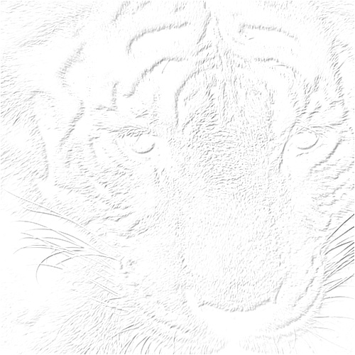
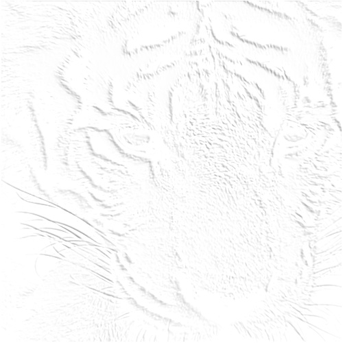
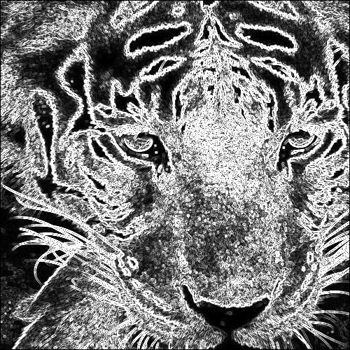
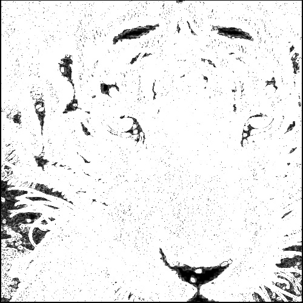

By Paul Joy
Original Image:
(1) Computing a gradient image (all positive values) from the horizontal and vertical differential images
(containing both positive and negative values). Display both results for 3*3 and 5*5 filters.
Gradient 3x3:
Gradient 5x5:
(2) Detecting edges at peaks of gradient values horizontally and vertically over a threshold. The threshold can be selected manually through multiple trial and error so that the edge results show good shape of scenes. Edge must be one pixel wide and marked in a bright intensity.
Edges 3x3:
Edges 5x5:
Using the following code: View